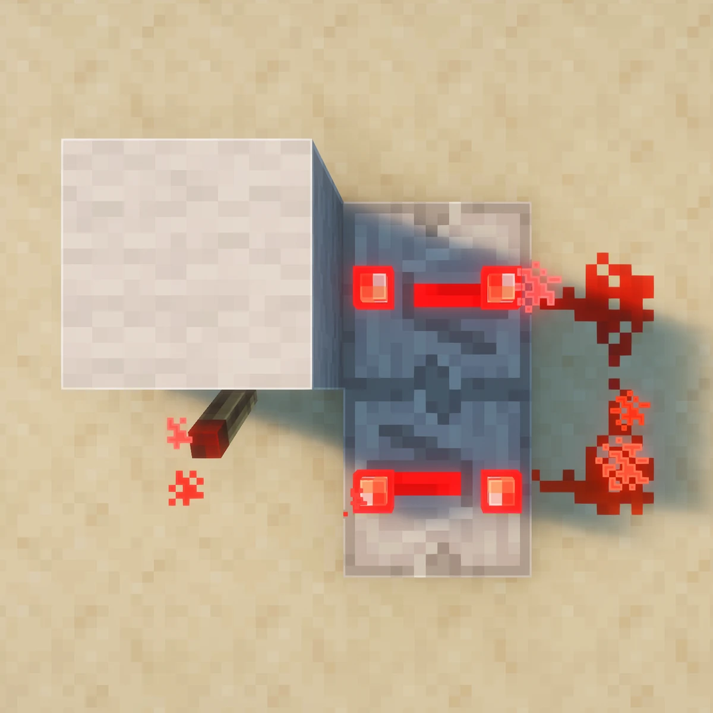
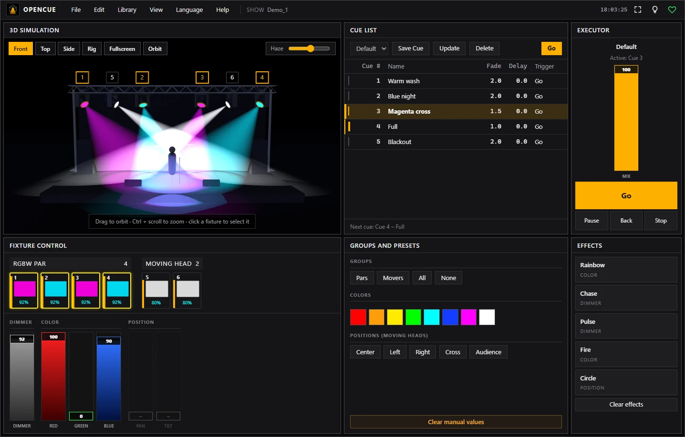

TheCraftedTech
TheCraftedTech
Eigene Tools & Software — offen auf GitHub
Übersicht
Projekte
OpenCue, Home TV und mehr — alles Open Source
Projekt
OpenCue
Open-Source-Lichtstellpult für DMX unter Windows
Projekt
Home TV
Live-TV auf dem Fire TV — direkt von der FRITZ!Box
PythonJavaScriptJavaArduinoWindows
OpenCueHome TVGitHub
Windows 10 / 113D-SimulationGPL-3.0
Fire TVSAT>IPMIT
thecraftedtech.github.io



1 Sender 1
2 Sender 2
3 Sender 3
4 Sender 4
1 Sender 1
2 Sender 2
3 Sender 3